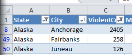

Getting Started with Pyvot¶
The Pyvot API is exposed in the xl package:
>>> import xl
See Installation if you can’t yet import Pyvot.
First steps: Python to Excel and back again¶
Pyvot enables easy transit of data between Python and Excel.
For example, we can move a list of Python values to Excel, view and manipulate the data, and retrieve the new version. In a symmetric and equally common usage, we can grab and process Excel values in Python, and display the result to Excel.
Python to Excel¶
>>> xl.Workbook() # Create empty Excel workbook, stored as the 'active' workbook
>>> a = range(1,10) # some Python array
>>> a
[1, 2, 3, 4, 5, 6, 7, 8, 9]
>>> xl.view(a) # show Python array in Excel (active workbook)
The Python array is copied into Excel. By default, Pyvot picks an open range on the active worksheet.

Excel to Python¶
Retrieving data from Excel requires an xl.Range object (see Ranges in Detail), which represents the cells on which to operate. The xl.view function returns the range that it selected to store the data:
>>> r = xl.view(range(1,10))
>>> r
<ColumnVector range object for $A$2:$A$1048576 (visible only)>
>>> r.get()
[1.0, 2.0, 3.0, 4.0, 5.0, 6.0, 7.0, 8.0, 9.0]
>>> sum(r) # ranges are iterable
45.0
Note that view chose the entirety of column A (sans header) to store our list, but Range.get assumed we only wanted its useful data.
Now we can manipulate the Excel range, and fetch the new results back. For example, suppose we delete some rows using the Excel UI and change the values like so:

>>> r.get() # get updated values
[1.0, 20.0, 8.0, 9.0]
The current selection is also available as a Range. This allows Excel to act as an interface for selecting interesting data:
>>> xl.selected_range().get()
8.0
Things to remember about Range objects:
- Range objects are a “live” connection back to the Excel workbook and are updated as the Excel range updates. Range objects are essentially L-values into the workbook.
- Range objects can return the current contents as a Python value via their get() method.
- A snapshot of the current selection is available as xl.selected_range()
- Range objects implement the iterable protocol.
- Range objects also have a set() method for updating the range contents.
Obtaining Ranges¶
So far, we have seen xl.Range objects returned from the top-level view() (this is also true of most other operations that insert data into Excel) and selected_range() functions. However, we more typically wish to refer to cells which already have a well-known name.
The xl.get function (and Workbook.get, which it wraps) finds Ranges for an Excel named range, table columns (see Working with tables), or by address (ex. A1:B4)

>>> xl.get("MY_DATA")
<Scalar range object for $B$2 (visible only)>
>>> xl.get("MY_DATA").get()
1234.0
xl.get aims to be ‘smart.’ It provides conveniences include the following:
- It excludes header rows (get("ColumnName").get() does not contain “ColumnName”)
- It only selects from the used range. In contrast, the raw Excel COM API has a frustrating problem where if you select an entire column, the returned range includes a million blank cells.
The Workbook.range method by contrast only handles A1-style references and named ranges (it doesn’t search column names), and applies neither of the aforementioned heuristics. It is useful for when you wish to access an exact range, without interference from Pyvot.
Managing Workbooks¶
Pyvot has a state model similar to PyPlot. It tracks an active workbook to use with convenience operators. You can also choose to use a particular workbook, which becomes useful when working with multiple workbooks. This is also a best practice when writing standalone Pyvot scripts.
The original code snippet could have been written more explicitly:
>>> import xl
>>> wb = xl.Workbook()
>>> wb.view(range(1,10))
<ColumnVector range object for $A$2:$A$1048576 (visible only)>
Each invocation of the xl.Workbook constructor sets the “active” workbook.
Connecting to an existing Excel instance¶
There are several ways to connect to an Excel workbook from Pyvot.
- Create a new (empty) workbook via xl.Workbook()
- Connect to an already-running workbook instance, by providing the name to xl.Workbook()
- Open a workbook from disk, by providing the path to xl.Workbook().
Suppose we have an existing open workbook, named cities.xlsx, which contains per-city crime-rate data that we downloaded from Azure DataMarket using the Excel Data Markertplace Addin:

Pyvot can show currently open Excel instances:
>>> xl.workbooks()
[Workbook(u'Book1'), Workbook(u'cities.xlsx')]
This returns an array of Workbook objects, and the Workbook __repr__ provides the name expression.
>>> wb = xl.workbooks()[1]
>>> wb.name
u'cities.xlsx'
>>> wb.get("City").get()
[u'Anchorage', u'Bethel', u'Bristol Bay Borough', ...<snip>, u'Blountsville']
Or we can provide the name directly to the workbook constructor:
>>> xl.Workbook("cities.xlsx")
Workbook(u'cities.xlsx')
>>> xl.Workbook(u'Book1')
Workbook(u'Book1')
>> xl.Workbook(u'Book2')
...exception...
If we provide a fully qualified path, the workbook will be opened from disk if needed:
>>> wb = xl.Workbook(r"c:\temp\cities.xlsx")
Pyvot will first try to match running workbooks by fully qualified path. If no such match exists, then it will match by the shortened filename. As a last resort, it will try to load the workbook from disk.
Shortcut: the Pyvot Shell¶
We have now covered how to import Pyvot, connect to workbooks, and move data in and out of Excel. For interactive and exploratory usages, those first two items become tedious. The Pyvot Shell provides a shortcut to quickly start an interactive session. The Pyvot shell is defined in the executable xl.shell module. Since xl should be on the Python module search path anyway, it can most easily be started by running python -m xl.shell
The shell eliminates the tedium of connecting to an open workbook by mapping each to a pre-defined variable. If no workbooks are open, it opens a blank one.
For more on interactive workflows with the Pyvot shell, see Interactive usage and xl.shell.
Working with tables¶
Pyvot is designed to work with tabular data and specifically recognizes Excel’s Tables and AutoFilter objects.
In Excel 2007 or later, you can create a table by highlighting a region and then pressing Ctrl + T. See here for more details on using tables in Excel. You can create an auto-filter via the Filter button on the Data ribbon:

Pyvot specifically recognizes column names from tables and auto-filters. Pyvot will search all tables in the workbook for a given column name.
Visible rows¶
Fetching ranges only returns data from visible cells by default. This allows you to use Excel to filter data, and then operate on the post-filter results in Python. For example, suppose we just want the cities in Alaska where violent crimes are greater than 100, and we want it sorted in alphabetical order. These filters are easy to set in Excel:
You can see from the blue row numbers on the left that Excel is hiding rows.
>>> wCities = xl.Workbook("cities.xlsx")
>>> wCities.get("City").get()
[u'Anchorage', u'Fairbanks', u'Juneau']
The expected workflow here is that you can use Excel’s visual filters on your data, and then pull the results back into Python.
For further details on how Ranges handle visibility, see Visibility.
Running Map operations on Excel columns¶
You can also run map operations on Excel data. This can be useful for writing Python functions to clean the data and return new computed columns.
For example, suppose we want to combine the city and state columns in a single column:
>>> def Merge(city, state):
... return city + ", " + state
...
>>> wCities = xl.Workbook("cities.xlsx")
>>> xl.map(Merge, wCities.get("City"), wCities.get("State"))
<ColumnVector range object for $N$2:$N$51 (visible only)>
xl.map works just like the builtin map function, but will inserts the results as a new computed column in Excel. It will infer a column name from the function name, and it will pick a column related to its arguments. Note below that “Merge” becomes a new column in the source table:

The results mirror that of the builtin map function which it emulates:
>>> wCities = xl.Workbook("cities.xlsx")
>>> cities = wCities.get("City")
>>> states = wCities.get("State")
>>> map(Merge, cities, states)
[u'Alexander City, Alabama', u'Bethel, Alaska', u'Bristol Bay Borough, Alaska',
...
xl.map also works with lambdas, or with input parameters that are non-Range Python iterables.
Apply operations on Excel columns¶
Pyvot also provides xl.apply, which is a counterpart to the builtin apply` function. Whereas ``map runs on each row independently, apply runs on the entire column.
For example, we can use xl.apply to create a new computed column showing how the values in “ViolentCrime” column compare to the average:
>>> # take a vector, return a vector
>>> def CompareToAverage(x):
... a = sum(x) / len(x)
... return [i - a for i in x]
...
>>> wCities = xl.Workbook("cities.xlsx")
>>> xl.apply(CompareToAverage, wCities.get("ViolentCrime"))
<ColumnVector range object for $N$2:$N$51 (visible only)>
Join operations between tables¶
Pyvot supports join operations on Excel tables. xl.join(rangeDest, rangeSrc) takes in 2 Ranges. It infers the containing tables for each range. For each value in rangeDest, it will do the lookup in rangeSrc and merge the row into the table in rangeDest.
For example, suppose we want to city crime data from in “cities.xlsx” with population data from “population.xlsx”.
First we load (or connect to) the workbooks containing tables we want to join:
>>> wCities = xl.Workbook(u'cities.xlsx')
>>> wPop = xl.Workbook("Population.xlsx")
Then we compute a primary key column, if necessary. In this case, we’re joining on multiple columns (both city and state), so we’ll merge them into a single column for the join:
>>> xl.map(Merge, wPop.get("City"), wPop.get("State"))
<ColumnVector range object for $D$2:$D$51 (visible only)>
The same operation is then applied on wCities.
The two mapped columns act as keys for the join:
>>> xl.join(wCities.get("Merge"), wPop.get("Merge"))

Destination table

Source table

Destination table after join
Ranges in Detail¶
Shape¶
Every Range has a shape which is determined by its dimensions (note that cell visibility is ignored for this determination). Each range shape corresponds to a subclass of Range. The Range.shape property is defined as type(self), and serves as a simple readability aid.
xl.get(“A:A”) returns a ColumnVector, whereas xl.get(“A1”) returns a Scalar. The other shapes are RowVector and Matrix (for 2D ranges). As demonstrated prior without due attention, xl.get(“A1”).get() returns a single value rather than a list of a single value, whereas we expect a Vector range (further derived for ‘row’ or ‘column’) to return a list. This is generally true; the data reading / writing methods of Range behave according to shape, most noticeably in types expected or returned.
Concerns for utility functions¶
Although the differing return types by shape does not cause surprise in interactive use, it can be an obstacle to writing re-usable utility functions. For example, a function written with Matrix ranges in mind will attempt to iterate row by row, and then within each row; that function would behave poorly given a ColumnVector of strings.
To this end, the Range class provides the as_matrix property, which promotes any Range shape to a Matrix:
>>> r = xl.get("A1")
>>> r
<Scalar range object for $A$1 (visible only)>
>>> r.as_matrix
<Matrix range object for $A$1 (visible only)>
>>> r.as_matrix.get()
[[u'some string']]
Visibility¶
As covered previously, Range objects typically exclude hidden cells in order to co-operate with auto-filters and table filters. Sometimes, this is not the desired behavior. The including_hidden and excluding_hidden properties (returning new Ranges) allow code to declare a desired treatment of hidden cells. A range derived from another (such as when getting a vector range for the first row of a matrix, or the result of as_matrix) inherits this flag.
In the following example, column B is hidden and empty:

>>> xl.get("A1:C2")
<Matrix range object for $A$1:$A$2,$C$1:$C$2 (visible only)>
>>> xl.get("A1:C2").get()
[[1.0, 3.0], [2.0, 4.0]]
>>> xl.get("A1:C2").including_hidden
<Matrix range object for $A$1:$C$2 (includes hidden)>
>>> xl.get("A1:C2").including_hidden.get()
[[1.0, None, 3.0], [2.0, None, 4.0]]
Due to the inheritance of visibility behavior in derived Ranges, most functions can remain naive to visibility concerns, while still producing a consistent result.
Cache Layer¶
Pyvot must assume that the contents of an Excel workbook can change at any time, due to interactive manipulation or other external influences. In the following REPL example, Pyvot must determine the dimensions of r twice (if r filters hidden cells, this requires applying a visibility filter and enumerating r’s visible components!):
>>> r.num_rows
4
(user may now decide to insert a column)
>>> r.num_columns
10
However, in the interest of high performance with large data sets, Pyvot internally uses a cache to minimize accesses to the (remote) Excel workbook. This cache assumes that Excel does not change during a call to the Pyvot API. Experiments indicate that this is responsible for a significant performance gain.
In most usages, this detail can be ignored in user code. However, the cache layer is exposed in the public API to enable users to make that same assumption within blocks of their own code. The Pyvot test suite, for example, enables the cache for the duration of each test by default; when disabled, the test suite takes about twice as long to run.
Users may enable the cache for a function with the @xl.enable_caching decorator, or for a block within a function:
with xl.CacheManager.caching_enabled():
a, b = xl.get("Column A"), xl.get("Column B")
print "A is %d by %d" % (a.num_rows, a.num_columns)
print "B is %d by %d" % (b.num_rows, b.num_columns)
Were Pyvot’s cache not enabled for that block, Pyvot would need to probe Excel for the workbook’s tables and search their headers twice, and determine the dimensions of a and b twice each.
Interop¶
Pyvot is written on top of Excel’s COM API. You can always get the underlying COM object and make COM calls yourself:
>>> wb
Workbook(u'cities.xlsx')
>>> wb.xlWorkbook # get underlying COM object
<win32com.gen_py.Microsoft Excel 14.0 Object Library._Workbook instance at 0x46745240>
>>> wb.xlWorkbook.ActiveSheet.Name # make COM-call outside of Pyvot
u'Sheet1'
Feedback¶
Pyvot is a very new public release, and we would appreciate hearing about your first experiences with Pyvot. Please email the PTVS team with any feedback.